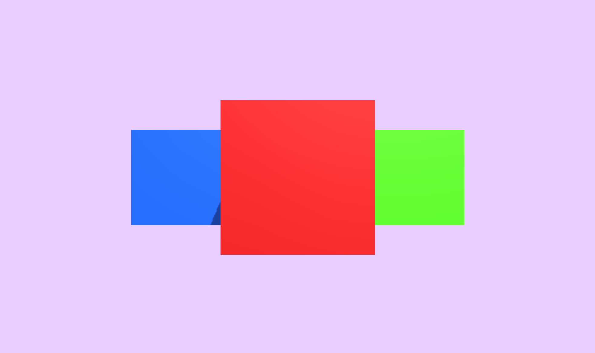

Carousel
Настраиваемый компонент для Unity, который позволяет интерактивно вращать 3D/2D объекты в сцене.
Разработчик игр и интерактивных приложений на Unity с опытом более 3 лет. Специализируюсь на создании Playable Ads, интеграции модов в готовые проекты, а также разработке editor-инструментов для технических артистов (Unity / Cocos). Постоянно улучшаю производительность проектов и применяю паттерны проектирования для поддержки чистоты и масштабируемости кода.
Несколько примеров моих работ

Настраиваемый компонент для Unity, который позволяет интерактивно вращать 3D/2D объекты в сцене.

Тайм менеджмент игра про ферму.

Настраиваемый компонент для Unity, создающий сетку пазловых кусочков с учётом формы их граней.

Быстрый визуальный доступ к компонентам объектов на сцене прямо в EditorWindow.